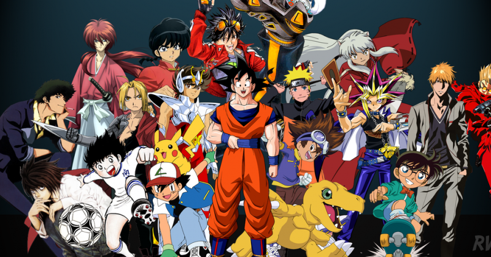
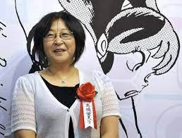
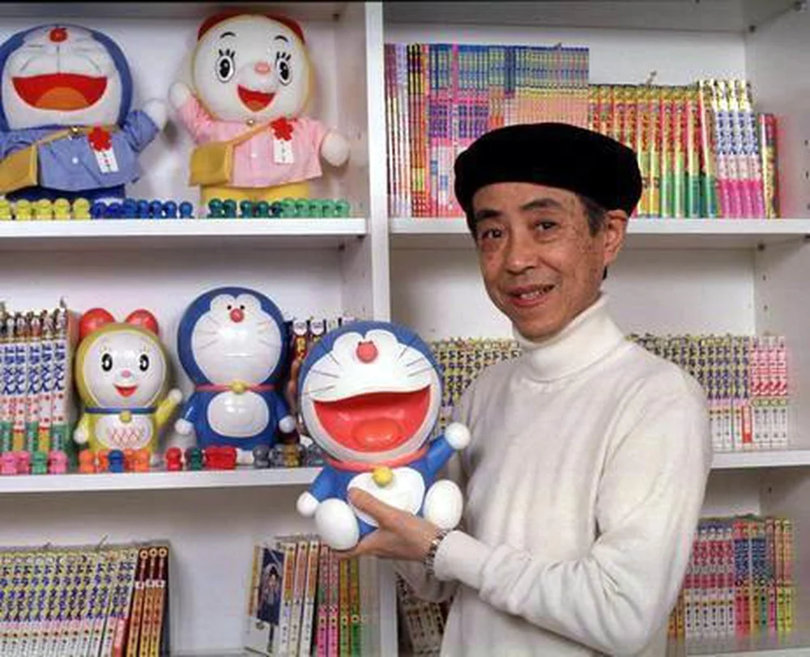
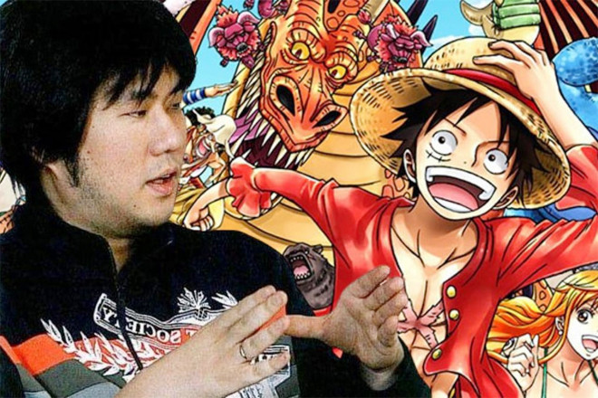

" Khang Nguyễn's Story là trang web đa năng về truyện tranh, manga và
anime. Trang web cung cấp một thư viện truyện phong phú với hàng ngàn
bộ truyện các thể loại dành cho độc giả mọi lứa tuổi. Các series
truyện nổi tiếng như One Piece, Naruto, Dragon Ball... đều được cập
nhật nhanh chóng sau khi ra chap mới. Bên cạnh đó, trang web có chuyên
mục bài viết review, phân tích các bộ truyện tiêu biểu. Mục multimedia
bao gồm video hay artwork về các nhân vật. Khang Nguyễn's Story sở hữu
cộng đồng người hâm mộ đông đảo và tích cực. Thông qua các hoạt động
tương tác trực tuyến, trang web giúp lan tỏa và phát triển văn hóa đọc
truyện tại địa phương."

My biography
Đây là câu chuyện về Nguyễn Lê Hoàng Khang - một chàng trai trẻ
có niềm đam mê lớn với truyện tranh và quyết tâm theo đuổi ước
mơ trở thành một họa sĩ truyện tranh chuyên nghiệp: Khang sinh
ra và lớn lên tại một ngôi làng nhỏ yên bình. Từ bé, cậu đã say
mê vẽ vời và thích đọc truyện tranh. Những bộ truyện Nhật Bản
đầu tiên được Khang đọc là Doraemon và Dragon Ball. Chính những
bộ truyện này đã thôi thúc niềm đam mê vẽ truyện tranh trong
Khang. Khi học cấp 3, Khang bắt đầu tự vẽ truyện tranh và sáng
tác câu chuyện cho riêng mình. Cậu say mê nghiên cứu các kỹ
thuật vẽ manga và luyện tập không ngừng. Tuy nhiên do gia cảnh
khó khăn, sau khi tốt nghiệp phổ thông Khang đành phải bỏ dở ước
mơ để đi làm thuê. 5 năm sau, nhờ tiết kiệm và cố gắng, Khang
quyết định theo học một khoá học về truyện tranh tại Thành phố.
Tại đây, Khang được học tập nâng cao kỹ năng vẽ và kể chuyện
cũng như tiếp xúc với nhiều họa sĩ, biên tập viên truyện tranh
chuyên nghiệp. Sau khi tốt nghiệp, Khang bắt đầu đăng tải truyện
tranh lên mạng và nhận được nhiều phản hồi tích cực từ độc giả.
Niềm đam mê thuở nhỏ giờ đây đã trở thành sự nghiệp, công việc
mà Khang có thể theo đuổi với tất cả tâm huyết và nhiệt huyết
của mình. Hiện tại, sau hơn 10 năm nỗ lực không ngừng, ước mơ
trở thành họa sĩ chuyên nghiệp của Khang đã dần trở thành hiện
thực. Cậu vẫn đang miệt mài theo đuổi đam mê và khát khao chinh
phục những đỉnh cao mới trong nghệ thuật truyện tranh.
Bước vào thế giới truyện tranh chuyên nghiệp, Khang không chỉ
dừng lại ở việc tạo ra những bộ truyện hấp dẫn mà còn mở rộng
kiến thức của mình về lịch sử nghệ thuật truyện tranh và văn hóa
pop Á-Âu. Cậu thường xuyên tham gia các hội thảo và workshop để
học hỏi từ những người tiền bối, đồng thời giao lưu với cộng
đồng người hâm mộ qua các sự kiện truyện tranh lớn. Nhận thấy
tầm quan trọng của việc kết hợp giữa nghệ thuật truyền thống và
công nghệ số, Khang đã bắt đầu thử nghiệm với việc sử dụng phần
mềm vẽ kỹ thuật số, mở ra một cánh cửa mới cho phong cách vẽ của
mình. Điều này không chỉ giúp cậu tối ưu hóa quy trình làm việc
mà còn tạo ra những trang truyện có chất lượng hình ảnh cao, thu
hút đông đảo độc giả trẻ. Không lâu sau, những tác phẩm của
Khang bắt đầu được các nhà xuất bản trong nước và quốc tế chú ý.
Cậu đã ký hợp đồng xuất bản cho bộ truyện đầu tay của mình, và
không chỉ thành công về mặt thương mại mà còn nhận được nhiều
giải thưởng nghệ thuật. Với lòng kiên trì và sự sáng tạo không
ngừng, Khang đã trở thành một nguồn cảm hứng cho nhiều họa sĩ
trẻ khác. Cậu không ngần ngại chia sẻ kinh nghiệm và khuyến
khích những người mới bắt đầu rằng, bất kể hoàn cảnh nào, chỉ
cần có đam mê và quyết tâm, mọi ước mơ đều có thể trở thành hiện
thực. Ngày nay, Khang không chỉ là một họa sĩ truyện tranh được
yêu mến mà còn là một diễn giả, một người thầy, truyền đạt niềm
đam mê của mình cho thế hệ tiếp theo, góp phần làm phong phú
thêm diện mạo của nền truyện tranh hiện đại.
Lịch Sử và Đam Mê
Blog Truyện Tranh là nơi sinh động của những câu chuyện huyền ảo
và cuộc phiêu lưu trong trí tưởng tượng, mở ra bởi Nguyễn Lê
Hoàng Khang với mong muốn chia sẻ niềm đam mê này với mọi người.
Sức Mạnh Từ Sự Hợp Tác
Đội ngũ tại Blog Truyện Tranht, gồm các họa sĩ, biên kịch, và
nhà phê bình, cùng nhau xây dựng nên những thế giới mới, nhân
vật sống động, và câu chuyện đáng nhớ.
Triết Lý Cốt Lõi
Chúng tôi tin vào sức mạnh của trí tưởng tượng và sự sáng tạo,
cam kết mang đến những trải nghiệm đọc truyện tranh chất lượng
cao, tôn vinh và phát huy nghệ thuật truyện tranh.
Hiromu Arakawa
Manga artist/Japanese comic author
Hiromu Arakawa, được biết đến qua tác phẩm nổi tiếng
"Fullmetal Alchemist", quản lý một blog cá nhân gần gũi với
người hâm mộ mang tên "Hiromu Arakawa Official". Thông qua
hình ảnh và các bản phác thảo định kỳ, Arakawa cho chúng ta
cái nhìn sâu sắc vào thế giới nội tâm phong phú của mình cũng
như quy trình lao động sáng tạo không ngừng nghỉ. Bà cũng
thường xuyên chia sẻ những câu chuyện thú vị xoay quanh đời
tư, sự nghiệp và đam mê nghệ thuật của mình. Được kết nối mật
thiết với người hâm mộ, Hiromu Arakawa còn cung cấp nhiều
thông tin hữu ích về các sự kiện sắp tới cũng như việc phát
hành truyện mới. Chắc chắn đây sẽ là không gian trực tuyến thú
vị đối với những ai yêu mến Fullmetal Alchemist.

Rumiko Takahashi
Manga artist/Queen of manga
Rumic World - Không gian sáng tạo của Takahashi Rumiko Với
"Rumic World", Rumiko Takahashi mở ra một cánh cửa để người
hâm mộ bước vào thế giới nội tâm phong phú cũng như quá trình
sáng tạo miệt mài của bà. Thông qua hình ảnh và bản phác thảo,
chúng ta được chiêm ngưỡng những ý tưởng nảy sinh từ trí tưởng
tượng táo bạo của Takahashi, và cả hành trình chuyển hóa chúng
thành những tác phẩm vĩ đại. Bên cạnh đó, Takahashi còn dành
thời gian tương tác, lắng nghe và chia sẻ cùng độc giả - những
người bạn đồng hành cùng bà trong hành trình nghệ thuật. Qua
những bài viết mang màu sắc cá nhân, chúng ta càng hiểu hơn về
con người, sự nghiệp và đam mê nghệ thuật manga của bà. Rumic
World chắc chắn sẽ là nguồn cảm hứng vô tận cho các họa sĩ
truyện tranh tương lai.

Fujiko F. Fujio
Manga artist/Co-founder of Fujiko Fujio manga group
Đây là tập hợp những truyện ngắn thuộc thể loại SF chưa từng
được dịch sang tiếng Việt của tác giả Fujiko F. Fujio với nét
vẽ kodomo quen thuộc đáng yêu không thể nhầm lẫn với tác giả
khác. Qua các câu chuyện tuy ngắn nhưng chứa nhiều tầng nghĩa
này, các bạn sẽ thấy được những giá trị của ước mơ, tình cảm
gia đình, tình bạn, tình yêu đôi lứa... với những cái kết tươi
sáng hướng đến đối tượng độc giả là thanh thiếu niên, bên cạnh
đó là những câu chuyện vô cùng sâu sắc dành cho người trưởng
thành, hàm chứa lượng kiến thức khổng lồ liên quan đến tâm
linh, luân hồi chuyển thế, triết học, vũ trụ, biến dị
không-thời gian... Hãy cùng tôi dõi theo từng trang truyện để
thưởng thức một tác phẩm xuất sắc của người họa sĩ tài hoa
Fujiko F. Fujio nhé !!

Eiichiro Oda
Manga artist/Author of One Piece manga
Oro Jackson là blog cá nhân do chính tác giả One Piece - Oda
Eiichiro - lập ra để chia sẻ các bức phác thảo, hình ảnh độc
quyền về quá trình sáng tác truyện của ông. Với thiết kế đơn
giản, gam màu vàng - đen mang phong cách hải tặc, blog thu hút
hàng triệu lượt truy cập mỗi ngày từ người hâm mộ toàn cầu.
Nội dung chủ yếu là những bức phác thảo nhân vật, cảnh quan
cùng ý tưởng ban đầu của Oda dành cho các nhân vật và cốt
truyện One Piece. Đây được xem là nguồn cập nhật thông tin độc
quyền và đáng tin cậy nhất từ phía tác giả series ăn khách
nhất nhì thế giới hiện nay.